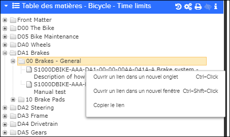
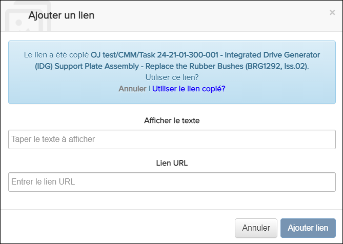
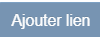
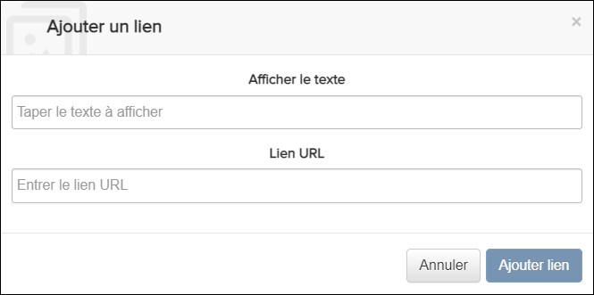

Non applicable pour Pinpoint Standalone Light.
- Entrez en mode création. Faire référence à Entrer en mode de création.
- Accédez à la section dans laquelle vous souhaitez ajouter un lien.
-
Sélectionnez l'une de ces options pour ajouter un lien:
- Pour copier un lien, procédez comme suit:
-
- Cliquez avec le bouton droit sur un document (par exemple, une
tâche) ou une ancre de document (par exemple, une sous-tâche) dans
la Table de Matières, puis cliquez sur
Copier le lien. Par example:

Table de Matières - Copier le lien
Remarque : Les ancres de document ne sont visibles que lorsque l'autorisation Peut créer du contenu autorisé est accordée.Remarque : Vous pouvez copier le lien avant d'entrer en mode création. - Dans la barre d'outils de création, cliquez
sur l'icône
 Ajouter un lien pour ajouter un lien de
référence. La boîte de dialogue Ajouter un lien
apparaît.
Ajouter un lien pour ajouter un lien de
référence. La boîte de dialogue Ajouter un lien
apparaît.
Ajouter un lien
- Cliquez sur Utiliser le lien copié? pour
remplir automatiquement les champs Texte d'affichage
et URL.
Cliquez sur Ignorer si vous ne souhaitez pas utiliser le lien copié. Saisissez manuellement du texte dans Afficher le texte et du champs URL.
- Cliquez sur le bouton

.
- Cliquez avec le bouton droit sur un document (par exemple, une
tâche) ou une ancre de document (par exemple, une sous-tâche) dans
la Table de Matières, puis cliquez sur
Copier le lien. Par example:
- Pour entrer manuellement un lien vers une tâche existante ou un lien externe, procédez comme suit:
-
- Dans la barre d'outils de création, cliquez
sur l'icône
Ajouter un lien pour ajouter un lien de
référence. La boîte de dialogue Ajouter un lien
apparaît.

Ajouter un lien Dialog
- Entrez des valeurs pour les champs Afficher le texte et URL.
- Cliquez sur le bouton .
- Dans la barre d'outils de création, cliquez
sur l'icône